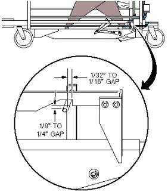

Operating Documentation
Direction 5670000, Rev# 1
Optima MR450w 1.5T Service Methods
Module Version 2.0, Version Date 8/19/08
Operating Documentation |
| Required Persons | Preliminary Reqs | Procedure | Finalization |
|---|---|---|---|
| 1 | 15 mins |
This adjustment is for the mechanical interlock which prevents the Patient Table from being undocked or lowered while the cradle is in the magnet bore.
| Item | Qty | Effectivity | Part# | Manufacturer | |
|---|---|---|---|---|---|
| Non-magnetic Service Tool Kit | 1 | - | 5112581 | - | |
Fasten the Upper Bellows in the up position and remove both Lower Base Side covers from the Patient Table. See the Patient Table Upper Bellows and Lower Base Side Cover Removal document for details.
With cradle in NOT HOME position (removed), check the interlock mechanisms for tolerances. To make adjustments, do one of the following:
1/16 to 1/32 inch (1.59 to 0.79 mm) gap - carefully bend interlock rod.
Illustration 1: Cradle Home/Table Down Interlock

1/8 inch (3.18 mm) gap - loosen lock nut and tighten or loosen the cable adjustment screw to achieve the proper gap. Tighten lock nut.
Illustration 2: Cradle Home/Table Down Interlock

| NOTE: | If the adjustment screw does not provide enough range for adjustment, coarse adjustment may be made to the cable length where the cable end is clamped into actuator bracket. Fine adjustment will be required after performing a coarse adjustment. |
With the cradle fully into the bore, ensure that the table down pedals do not allow the table to go down. Use both the table down pedal from the table and the dock. If the table does go down, please perform the adjustment procedures again.